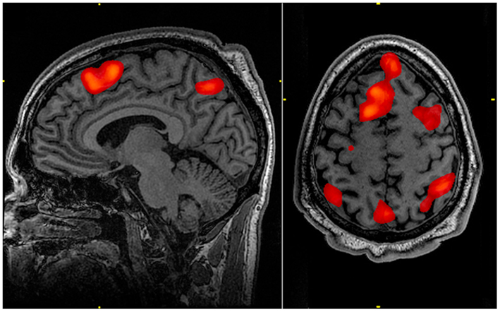

Research
What we do
We use experimental, physiological and computational methods to explore the mind–brain–action nexus in political context.
Our methods
Our team uses a range of experimental approaches to get ‘under the hood’ of political attitudes, identities and behaviours.
Our impact
We aim to understand what is happening in people's brains, minds and bodies when they are posting comments online, making policy, voting in elections or deciding whether to trust or share ‘fake’ news. We use these insights to guide public policy practice and enhance public understanding at a national and international level.
Our vision
We believe good research is collective and shatters disciplinary borders. Our work is produced in collaboration with colleagues from social sciences, psychology, informatics and brain imaging centres at the University of Edinburgh. We also work closely with other universities, in the United Kingdom and abroad, as well as with partners in industry.
The method set
- Functional Magnetic Resonance Imaging (fMRI) brain scanning
- Electroencephalography (EEG)
- Survey experiments
- Behavioural games
- Face-emotion coding
- Eye-tracking
- Physiological hormone testing
- Computational text analysis
- Large Language Models (LLMs)
Method
fMRI
Functional brain imaging lets us ask what underpins a sense of social belonging and political obligation — questions that self-report alone cannot settle. Working with Edinburgh Imaging and colleagues at the Interacting Minds Centre in Aarhus, we have used fMRI to study how implicit indicators of national identity modulate brain activation when people process another person's pain, how social exclusion plays out under a cyberball paradigm, and how political identity shapes trust in information.
This strand is where the lab's political science and cognitive neuroscience halves meet most directly, and it is deliberately slow, collaborative work: scanner studies are run with imaging specialists at the Clinical Research Imaging Centre and the Brain Research Imaging Centre.
See the resulting papers
Method
Face-emotion coding and eye-tracking
Where a person looks, and what their face does while they look, are measures that do not depend on what they are willing to say. We combine eye-tracking with automated face-emotion coding, electrodermal activity and heart-rate measures to capture emotional, cognitive and behavioural responses as they happen.
The lab's work here runs from political stimuli through to human–machine interaction: identifying behavioural indicators when things go wrong during interaction with artificial agents, measuring mutual gaze as an index of social presence, and tracking cardiovascular and skin conductance responses that distinguish threat from challenge when people confront social change.
Method
Big-data and cognitive framing in social media
We shift the focus away from ‘manufactured’ data generated by surveys, interviews and focus groups by also measuring the spontaneous expression of opinion online. The lab holds one of the largest available corpora of Brexit-related tweets, built deliberately with attention to how collection strategy biases what you find.
That archive has supported work on troll behaviour and foreign interference in the referendum debate, on how opinion moved within Twitter, and on how the European Commission communicates. More recently the same computational strand has turned to large language models — both as instruments for narrative and psychometric text analysis, and as objects of study in their own right.
Political communication projectsProgrammes
Ongoing projects
Our work is organised into four overlapping programmes. Individual studies are listed on the projects page.
Neuropolitics of Political Behaviour
We shift the focus from ‘manufactured’ data generated by surveys, interviews and focus groups, by also measuring spontaneous expression of opinion online and experimentally exploring the neuro-biological correlates of political behaviour. Big data allow us to measure the dynamics of public opinion and how it reacts to real-world events and experimental interventions. Our expanded understanding of public opinion, including emotional, neural and physiological responses, and how to measure it, sheds fresh light on what drives individual and collective political action.
Neuropolitics of Public Policy
We examine the interaction between the policy environment, neural and physiological responses, individual personality characteristics and inter-group dynamics, to identify how these shape problem perceptions, public policy decisions, their implementation and public acceptance. Policy-makers operate in rapidly changing political, constitutional and technological environments, facing uncertainty and risk. Neuropolitical insights can help national and international policy-makers cope with unprecedented rates of change, volumes of information and levels of uncertainty in turbulent policy environments.
Neuropolitics of Identity
How does a sense of identity impact on our ability to process information? How do implicit identity triggers, or shifting contexts, impact on the perceived legitimacy or effectiveness of policies or political structures? Using experimental brain imaging techniques we ask what underpins a sense of social belonging and political obligation. We use neuroscientific insights to investigate how multimodal interactions (e.g. vision, audition, imagery) provoke or prevent identity-related behaviours. We ask how these relate to a sense of societal belonging, to political attachment, loyalty, disaffection and public disengagement.
Neuropolitics of Political Communication
We ask how, in a new age of ‘fake news’ and ‘bots’, citizens balance accuracy (believing the truth) with consistency (believing what they want to believe). The scale and fragmentation of the digital media system raises questions about citizens' exposure and response to political information. We combine fMRI, physiological and behavioural experiments with observational big data analysis, to determine why some messages are perceived as authoritative or authentic, and use these insights to design information environments better able to foster a sense of security, legitimacy and trust.